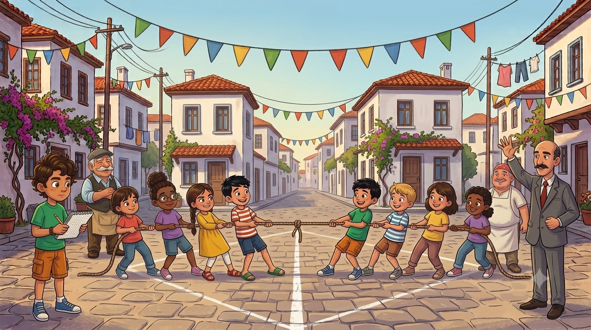
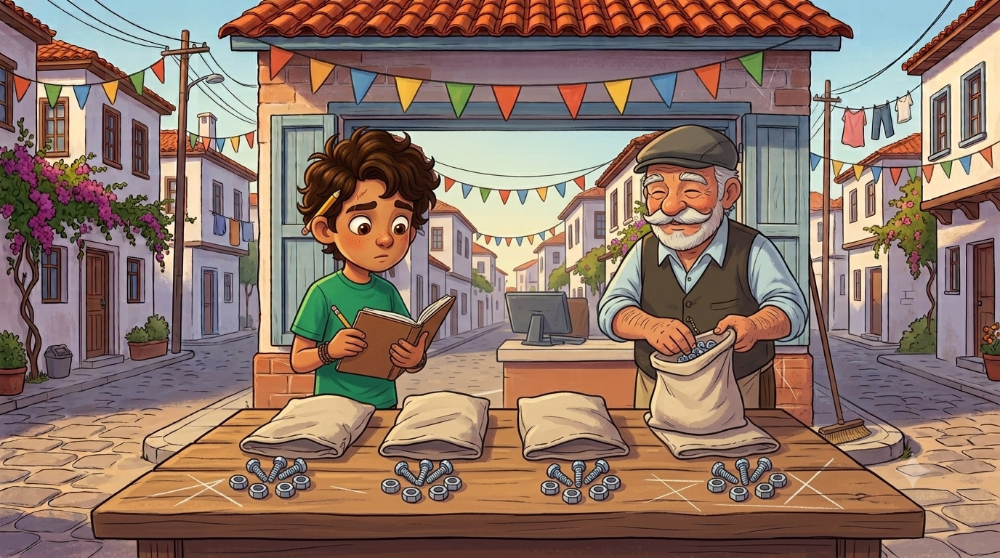
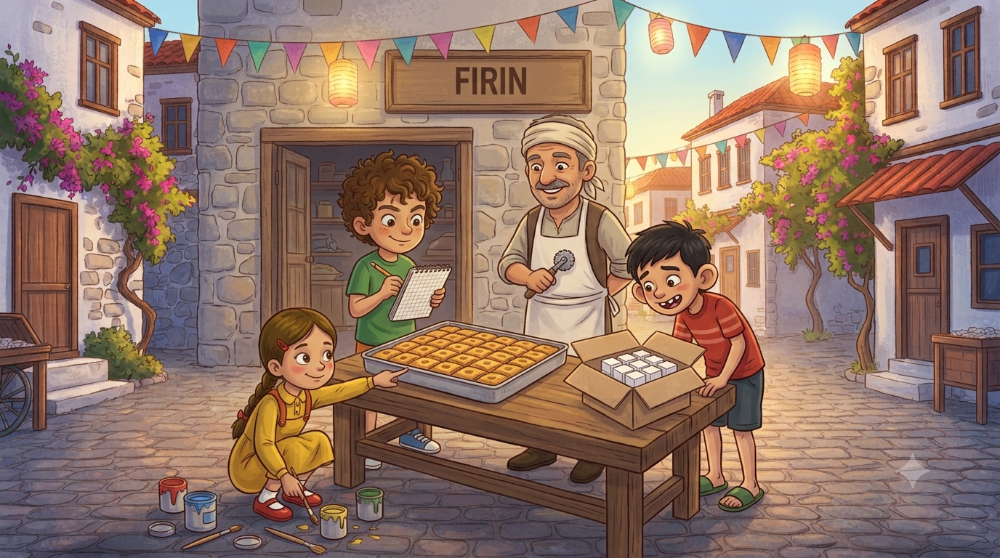

Mahalle şenliğinde halat çekme oyunu var ve kural net: iki takımın toplam kütlesi eşit olacak. Hakem kim? Tabii ki dedem ve o eski kefeli terazisi. Ama asıl kriz bakkalın kasa fişinde patlıyor: 3 + 2 × 5 kaç eder? Emre 25 diyor, ben 13. Mahalle ikiye bölünüyor... Matematiğin trafik kuralları göreve!
Parkın bütçesi meclisten geçince mahalle şenlik kararı aldı. Şenliğin yıldız oyunu: halat çekme. Muhtar kuralı okudu: "Adil oyun için iki takımın toplam kütlesi EŞİT olacak!" Herkes tartıldı, kütleler yazıldı. Bizim sokağın takımı 42, 35, 32, 54 ve 48 kilo; toplam 211. Fırın sokağının takımı 56, 40, 30, 35 ve 50 kilo; toplam yine 211. Muhtar bana döndü: "Denge Baş Hakemi!" Sırada bekleyen unvanlarımdan biri daha göreve başlamıştı.
İlk oyundan sonra bizim takımdan 35 ve 48 kiloluk iki oyuncu yoruldu; yerlerine 38 ve 45 kiloluklar girdi. Emre itiraz etti: "Oyuncu değişti, denge bozuldu!" Ben defterimi açtım: çıkanlar 35 + 48 = 83, girenler 38 + 45 = 83. "İki taraftan aynı miktar çıkıp aynı miktar girerse toplam değişmez," dedim, "eşitlik korunur." Dedem kasketinin altından onayladı: "Teraziye sor istersen, o benden yaşlı, benden dürüst." Terazi lafı tanıdık geldiyse yanılmıyorsunuz: pasta davasında kesirleri tartan adalet terazimiz, bu kez kilo tartmaya terfi etmişti.
⚖️ Defterime not aldım:Eşitliğin korunumu: Eşitliğin her iki tarafına aynı sayı eklenir veya çıkarılırsa, her iki taraf aynı sayıyla çarpılır veya bölünürse eşitlik korunur. Tek tarafa dokunursan denge bozulur!

Şenlik hazırlığı nalbura da iş çıkardı: bayrak direkleri için vida ve somun lazımdı. Dedem siparişi okudu: "4 torba istemişler; her torbada 5 vida, 2 somun olacak." Ben hesaba giriştim: 4 × (5 + 2)... Dedem çoktan bitirmişti: "Yirmi vida, sekiz somun, toplam yirmi sekiz." Nasıl bu kadar hızlı? "Dört torbanın vidasını ayrı saydım, somununu ayrı: 4×5 ve 4×2. Çarpma dediğin, parantezin içine misafirliğe gider evlat; ikisine de ayrı ayrı uğrar."
Sonra çuvalları sayarken bir şey daha fark ettim: 25 + 35 ile 35 + 25 aynı; 13 + 8 ile 8 + 13 aynı. Toplarken sıra fark etmiyor! Üstelik (12 + 15) + 21 ile 12 + (15 + 21) de aynı — parantezi nereye koyarsan koy, sonuç değişmiyor. Dedem tezgâhı silerken özetledi: "Toplamanın huyu böyledir; kimin önce geldiğine bakmaz. Çarpma da öyle. Ama çıkarma alıngandır, ona bulaşma." Defterim bana baktı, ben deftere; ikimiz de bu adamın okula gitmemiş olduğuna inanamıyoruz.
🔄 Defterime not aldım:Değişme: a+b = b+a, a×b = b×a. Birleşme: (a+b)+c = a+(b+c). Dağılma: a×(b+c) = a×b + a×c — çarpma, parantezdeki herkese ayrı ayrı uğrar! Zor çarpımlarda işe yarar: 49×12 = 49×10 + 49×2.

Öğlen fırına uğradık; Kadir Usta şenlik için baklava hazırlıyordu. Tepsiye baktım: her sırada 6 dilim, 6 sıra. Elif saymama fırsat vermedi: "6 kere 6, yani 6² — altının karesi: 36 dilim!" Kadir Usta hamur ruletini havada döndürdü: "Sayının sağ üstüne minik bir 2 koyuyorsun, o kadar mı?" — "O kadar. Kendisiyle bir kez çarpıyorsun. Kare, tepsi döşemektir."
Sonra bakkaldan küp şeker geldi — kutunun içinde şekerler 3 en, 3 boy, 3 kat dizilmişti. Elif yine atladı: "Bu da 3³ — üçün küpü: 3 × 3 × 3 = 27 şeker!" Emre kutuyu salladı: "Peki neden adı küp şeker?" — "Çünkü her şeker minicik bir küp; kutusu da kocaman bir küp. Küp, kutu istiflemektir." Emre o gün eve giderken her kutuya "acaba kaç üssü kaç?" diye baktı; bakkalın kolonya kutusuna bakarken yakalandı, mahcup oldu.
🔢 Defterime not aldım:Üslü ifade: Bir sayının karesi = kendisiyle 1 kez çarpımı: 6² = 6×6 = 36. Bir sayının küpü = kendisiyle 2 kez çarpımı: 3³ = 3×3×3 = 27. Okunuşu: "altının karesi", "üçün küpü".

Kriz, akşamüstü bakkalda patladı. Necmi'nin hesap makinesi bozulunca fişleri elle yazmaya başlamıştı. Emre'nin fişinde şu vardı: 3 + 2 × 5 — bir simit üç lira, iki poşet süt beşer lira. Emre parayı saydı: "3 artı 2 eşittir 5, çarpı 5 eşittir 25 lira!" Necmi kaşlarını çattı: "Yirmi beş mi? Ben 13 hesapladım!" Bakkalın önü mahkemeye döndü; mahalleli ikiye bölündü: Yirmibeşçiler ve Onüççüler.
Dedem geldi, üç kez boğazını temizledi. Mahalle sustu. "Matematikte trafik kuralı vardır," dedi. "Kavşakta kim önce geçer? Önce parantez, sonra üslü olan, sonra çarpma ile bölme, en sonda toplama ile çıkarma. Burada çarpma önce geçer: 2 × 5 = 10. Sonra toplama: 3 + 10 = 13." Emre itiraz edecek oldu: "Ama soldan okuyunca..." — "Trafikte de soldan gelen değil, yol hakkı olan geçer evlat." Horoz tam bu cümlenin üstüne öttü; mahalle bunu onay saydı.
Akşam muhtar kapıya dayandı; elinde şenlik programı: "Yarın Hesap Yarışması var! Jüri başkanı sensin! Ama önce seni denetleyeceğim — jüri, yanlış bilirse şenlik rezil olur!"
Muhtar, Hesap Yarışması jürisi olmadan önce seni sınıyor. Beş soruyu da geç, jüri koltuğuna otur!
⭐ Puan: 0❓ Soru: 1/5
⚖️ Jüri Koltuğu Senin!
Hesap Yarışması'nda tek bir itiraz bile çıkmadı; Yirmibeşçiler bile özür diledi. Muhtar on üçüncü unvanı ilan etti: "İşlem Trafiği Genel Müdürü!" Dedem köstekli saatin zincirine bir çentik daha attı.